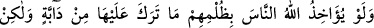
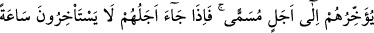
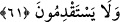

Sütten kesilmeye tahammül edersen kurtulacaksın
Melek gibi Hakk’ı tesbîhi gıda edin
Ki melekler gibi ezâ ve cefâdan kurtulasın
61. Eğer Allah, insanları zulümleri yüzünden cezalandıracak olsaydı, yeryüzünde
hiçbir canlı bırakmazdı. Fakat onları takdir edilen bir müddete kadar erteliyor.
Ecelleri geldiği zaman onlar ne bir saat geri kalabilirler ne de öne geçebilirler.
“Eğer Allah, insanları” yâni kâfirleri “zulümleri” küfür ve mâsıyetleri “yüzünden
cezalandıracak olsaydı, yeryüzünde hiçbir canlı bırakmazdı.” Yâni yeryüzünde
hareket eden hiçbir canlı bırakmazdı; bilakis zâlimlerin zulümleri sebebiyle tamâmen
helak ederdi. Nitekim Allah Teâlâ başka bir âyette şöyle buyurmuştur: “Öyle bir
fitneden sakının ki o, içinizden sâdece zulmedenlere erişmekle kalmaz. (el-Enfâl,
8/25) Canlıların helâki ecellerinin gelişiyle, insanların helaki ise bir cezâ olarak olur.
Ebû Hüreyre (r.a.)’dan rivâyet edilmiştir: O bir kimsenin “Zâlim ancak kendisine
zarar verir” dediğini işitti. Bunun üzerine: “Hayır! Vallâhi, zâlimin zulmü sebebiyle toy
kuşu (hubârâ) bile yuvasında ölür.” dedi.
İbn Mes‘ud (r.a.)’dan rivâyet edilmiştir: “Eğer Allah, âdemoğlunun günahları
sebebiyle mahlukâta azab etseydi, deliğindeki böceklere varıncaya kadar bütün
mahlûkâta isâbet ederdi ve sema yağmurunu tutardı. Ancak Allah, afv ve lütfu ile azabı
onlardan tehir etmektedir.”
Fakir (Bursevî) der ki: Zulmün maddî ve mânevî zararları vardır. Bu şuna benzer: Bir
kimse evini yaksa, bu mahallenin bütün evlerine ve nihâyet şehrin tamamına sirâyet
edebilir. Bu arada hayvanlar ve haşerat da yanar.
Araplar, adını kinâye yoluyla arz ve semâyı kasdederek: “Falan onun üzerindekilerin
en üstünü, falan da onun altındakilerin en değerlisi” derlerdi. Gerek söyleyen ve
gerekse dinleyen tarafından bununla ne kasdedildiği kolayca anlaşıldığı için herhangi
bir açıklama yapma ihtiyacı da duymazlardı. Yine Araplar, bir elin parmaklarını
kasdederek: “Birden beş yaratan Allah’a yemin olsun ki” derlerdi. Bu âyette de yeryüzü
zikredilmeden o kasdedilmiştir.
Edebsiz adam yalnız kendisine kötülük etmez
Belki onun ateşi cümle âleme erişir